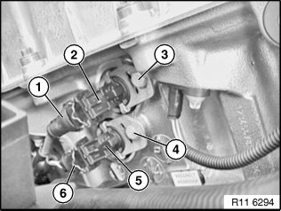
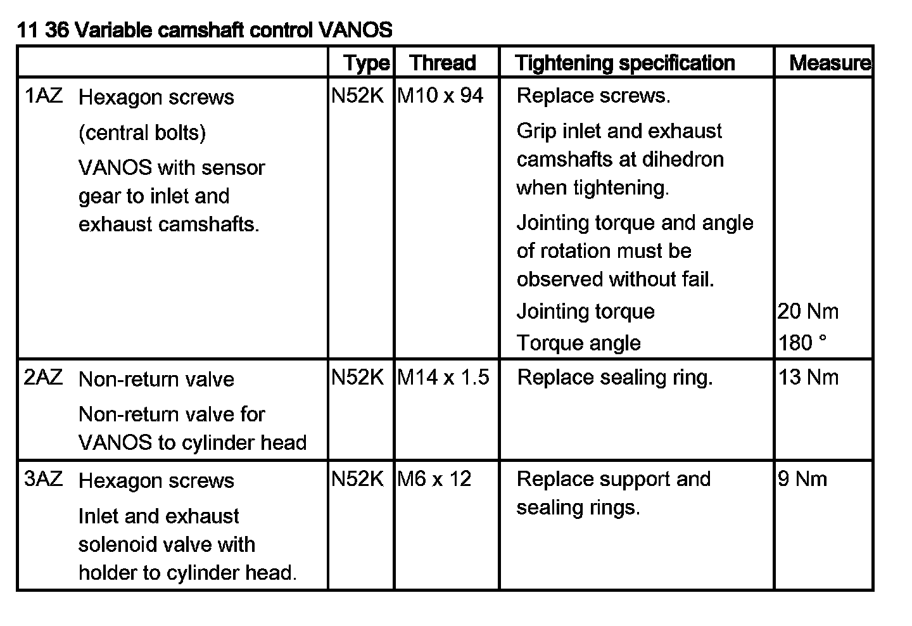

Variable Valve Timing Solenoid: Service and Repair
11 36 655 Removing and installing/replacing both solenoid valves (N52K)Important!
It is essential to observe conditions of absolute cleanliness when removing and installing the inlet and exhaust solenoid valves.
Possible malfunction if valves are contaminated:
^ Rough running
^ OBD fault entry
^ Exhaust emission characteristics
^ Low engine power
Necessary preliminary tasks:
^ Remove fan cowl (E89 only)

Disconnect plug connection (1) on inlet solenoid valve (2).
Release screw (3).
Note:
Secure support and sealing ring against falling down.
Remove inlet solenoid valve (2) with bracket towards front.
Disconnect plug connection (6) on exhaust solenoid valve (5).
Release screw (4).
Note:
Secure support and sealing ring against falling down.
Remove exhaust solenoid valve (5) with bracket towards front.
Tightening torque 11 36 3AZ.
Important!
Risk of mixing up plug connections (1 and 6).
Installation:
Replace support and sealing rings.
Assemble engine.
Check function of DME.
